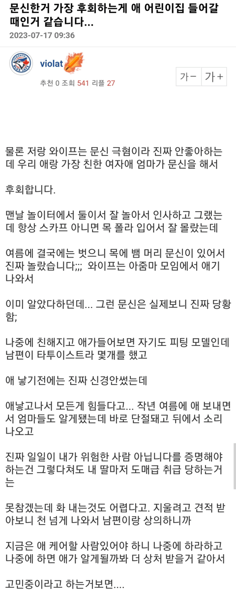
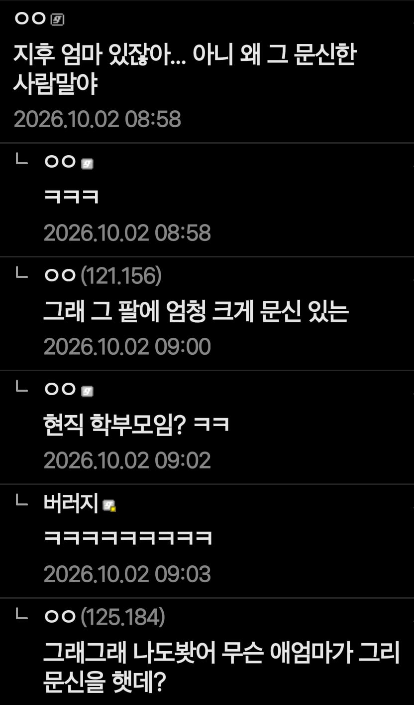

이레즈미나 눈에 띄는 큰 문신을 한 사람들은 그걸 원해서 한거 아닌가?
나 어때? 무섭지? 나한테 못 다가오겠지? 너네랑 다르지?
이런걸 원해서 한 문신일거고 사람들이 그렇게 대해준다는걸 왜 거부함
근데 애초에 문신한다 = 나 특별하다. 그러니 특별취급해라 = 사람들으로 하여금 '아 저사람은 우리랑 다르구나'라는 생각이 자연스럽게 듦.
이 과정을 통해서 멀리하는거아님??? 뭐 당연한 결과같은데
뭔가 비상식적인 행동 하는 사람들 보면 높은 확률로 문신이 있음
그러려고 문신한거잖아
목에 뱀문신이면 참작의 여지가 없다
문신자체가 문화권에 편입되어있는 곳 (폴리네시아)이 아니고서는 그냥 마이너스임 무조건
문신 할 정도로 멍청하다지만 최소한 때와 장소는 구분해야지
뱀문신은 어디 범죄조직 조직원들이나 할만한거 아닌가 ㅋㅋ
책임에는 대가가 따르는 법이지...
팔에 상처있어서 왚한테 둘리 뼈다구 물고기 문신이라도 할까 했다가 절대하지말라고해서 안했는데... 아이 태어나고보니깐 안하길 잘한듯
나도 상박 가로 지르는 길쭉한 흉있는데
한창 흉터를 문신으로 덮는거 유행할때 잠깐 혹했다가
문신보다 흉이 더 멋있지 않나 싶어서 안했음ㅋㅋㅋㅋㅋㅋㅋ다행이다 싶음ㅋㅋㅋㅋㅋ
딱 초롱이 몸매들이넼ㅋㅋㅋ 꺼져ㅋㅋ
근데 그렇게 봐달라고 하는게 문신 아님?
자기 편하게 대하지 말라고 하는거잖아